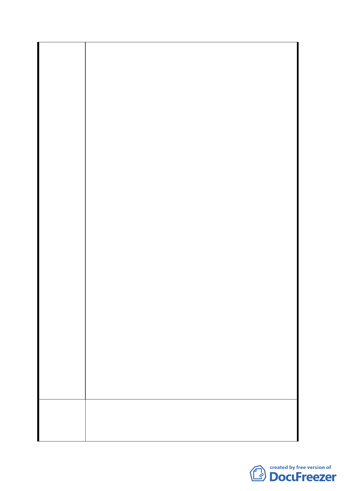

本人在此新屋住不到一年多，台北市政府都市發展局即
傳真給本人姐姐，稱述九十二年四月二十八日聯合報市
政版已刊登構想木柵路五段保護區規劃旅館、休憩區，
本人十分震驚，心想好不容易新屋剛落成，擺脫長年淹
水之夢靨，怎會遭此狀況，旋即有台北市政府九十二年
十二月十一日府都一字第○九二二六一二五○○○號公
告，公告本市「為修訂台北市木柵路五段附近地區都市
計劃辦理禁建案」，另於九十三年六月接獲都市計畫「變
更台北市文山區木柵路五段附近地區主要計畫案」說明
會通知單。
2.綜上述，依行政程序法第八條之規定，行政行為，應以
誠實信用之方法為之，並應保護人民正當合法之信賴。
本人於接獲台北市政府工務局新建工程處之函文，即速
有作為，怎知政府於核准本人就地整建案時，卻無視於
先前已有全面通盤檢討木柵路五段都市計畫案，在無預
為告知本人情況下，致使本人以就地整建之新屋，列為
變更計畫案之範圍。在市民已投入大量積蓄，且向銀行
貸款之雙重壓力下，叫市民如何心服。請想一想一個剛
新建完成之新屋，才住進不久，政府即將其規劃為旅館、
遊憩區，新屋未來將面臨拆除之命運，市民心中有多麼
憤恨不平。
3.不信賴保護原則：政府將市民新屋拆除變更為旅館、遊
憩區之行政行為，不符信賴保護原則。理由是在為何不
在核准市民就地整建時，即預為告知未來政府可能會有
之作為，讓市民不至於浪費無謂之金錢，政府卻以行政
處分〈信賴基礎〉核准市民於文到三個月內提出申請，
逾期不予受理之方式，督促市民有所作為；市民卻在相
信政府合法之行政處分下，投入大量金錢，動工完成就
地整建之工作〈信賴表現〉；況且並無信賴不值得保護之
狀況。
4.投入巨額資金：市民以向銀行貸款之方式，就地整建新
屋，所費不貲。
5.新屋搬住進不久：前後住不到一年多，即面臨拆除之命
運。
1. 新屋存續保障：依信賴保護原則之方式，新屋存續保
建議辦法
2.
障，讓市民繼續住在該地。
政府於保護區內提供進住優質住宅：依九十二年四月二
十八日聯合報市政版之內容：木柵路保護區將朝向發展
一二